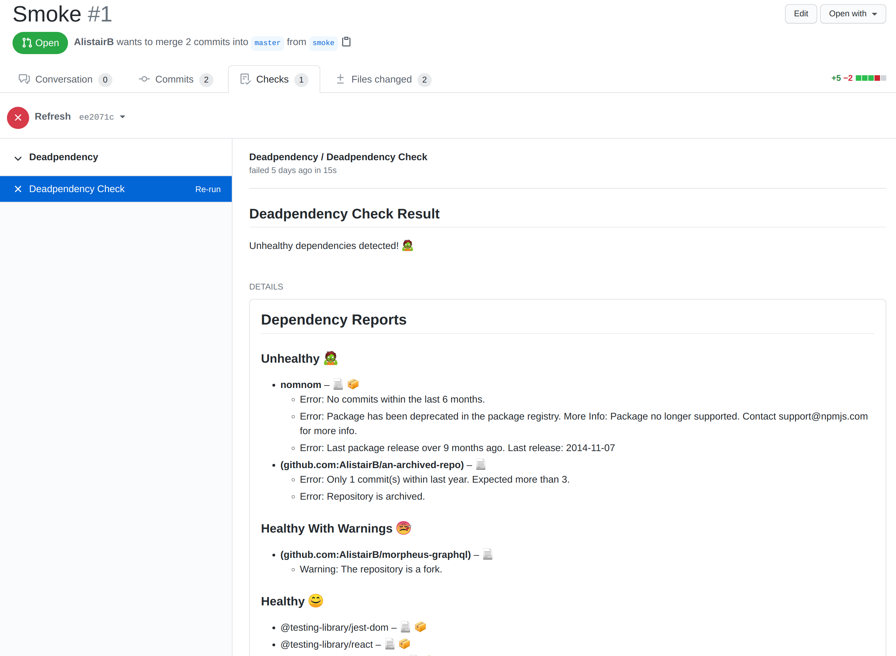

---
# Feel free to add content and custom Front Matter to this file.
# To modify the layout, see https://jekyllrb.com/docs/themes/#overriding-theme-defaults
layout: home
---
Automated dependency health analysis
Get alerted when your software dependencies become inactive or otherwise unhealthy.

Learn more